GEBRUIKSHANDLEIDING
Dependency Insight
Overzicht per functionaliteit: dependencies in kaart brengen, teamworkflows visualiseren en de keten tussen teams doorzien.
100% lokaalAlle data blijft in je browser. Niets wordt naar een server verstuurd.
Geen persoonsgegevensAlleen rollen en teamniveau-informatie, nooit namen.
TransparantElke risicoscore is uit te leggen — nooit een black box.
Versie juli 2026 · Nederlands / English
1Basisnavigatie
Elk scherm deelt dezelfde koptekst — dit is het startpunt voor alle functionaliteit.
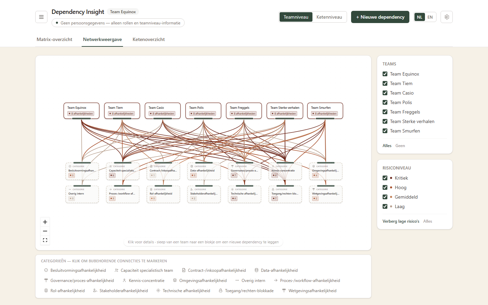
- ☰ Hamburgermenu — open de teamlijst en navigeer naar een teampagina.
- Teamniveau / Ketenniveau — schakel de matrix en risico-badges tussen interne (team) en externe (keten) dependencies.
- + Nieuwe dependency — open het formulier om een dependency toe te voegen.
- NL / EN — wissel de taal van de hele applicatie.
- ⚙ Instellingen — export/import, mockdata, alles wissen (hoofdstuk 11).
- Drie tabbladen: Matrix-overzicht, Netwerkweergave, Ketenoverzicht — elk hoofdstuk hieronder behandelt er één.
2Matrix-overzicht
Een sorteerbare, filterbare lijst van alle dependencies — het startpunt voor een gedetailleerde blik.
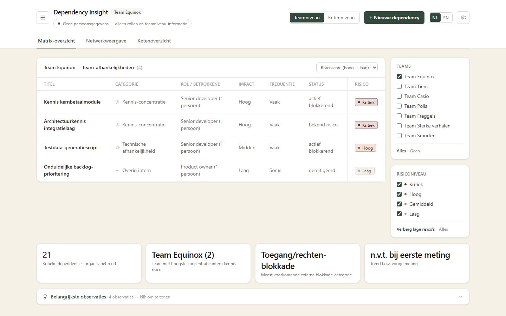
- Filter op team en risiconiveau via het paneel rechts.
- Sorteer op risicoscore (hoog→laag / laag→hoog) of op laatst bijgewerkt.
- Klik op een rij voor het volledige detailpaneel (hoofdstuk 5).
- Onderaan: een samenvatting (kritieke dependencies, hoogste kennis-risico) en belangrijkste observaties, automatisch afgeleid uit de data.
3Netwerkweergave
Een visueel, sleepbaar netwerk van teams en categorieën — handig om clusters van risico te herkennen.
- Elk blokje is sleepbaar (Miro-achtig); posities worden onthouden.
- Sleep vanaf een team naar een categorieblokje om direct een nieuwe, voorgevulde dependency aan te maken.
- Klik op een categorie in de legenda onderaan om alle bijbehorende verbindingen te markeren.
- Klik op een team- of categorieblokje voor een lijst van onderliggende dependencies.
4Ketenoverzicht
Toont hoe teams elkaars werk als input/output doorgeven — de "keten" achter de dependencies.
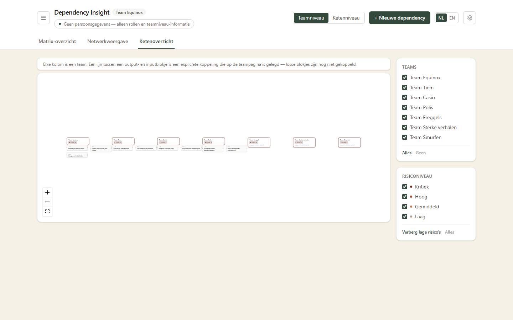
- Elke kolom is een team, met zijn input- en outputblokjes.
- Een lijn tussen een output- en inputblokje is een expliciete koppeling, gelegd op de teampagina (hoofdstuk 8) — nooit automatisch geraden.
- Losse (nog niet gekoppelde) blokjes zijn normaal — geen foutstatus.
- Zelfde team- en risicofilters als de andere weergaven.
5Een dependency toevoegen of bewerken
Hetzelfde formulier voor aanmaken en bewerken, bereikbaar via "+ Nieuwe dependency" of vanuit een detailpaneel.
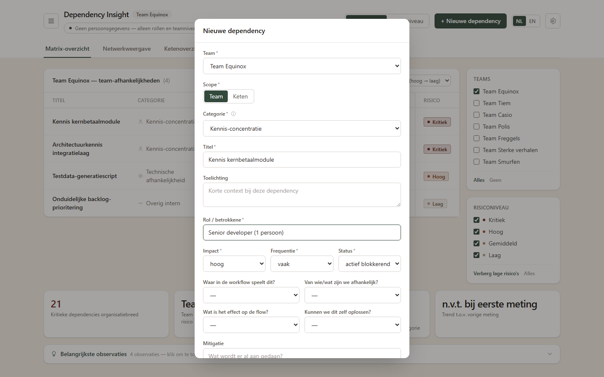
| Veld | Toelichting |
|---|
| Team, Scope, Categorie, Titel, Rol/betrokkene | Verplicht. Categorie heeft een "+ Nieuwe categorie toevoegen"-optie die meteen overal beschikbaar komt. |
| Impact / Frequentie / Status | Verplicht — bepalen samen de risicoscore (zie detailpaneel). |
| Waar in de workflow, Van wie/wat, Effect op de flow, Zelf oplosbaar | Optioneel. Vullen deze in? Dan verschijnt de dependency automatisch op de teampagina bij de juiste workflow-fase. |
| Toelichting / Mitigatie | Optionele vrije tekst. |
Detailpaneel: elke dependency toont zijn risicoberekening in gewone taal (impact × frequentie + statuscorrectie) — nooit een black box.
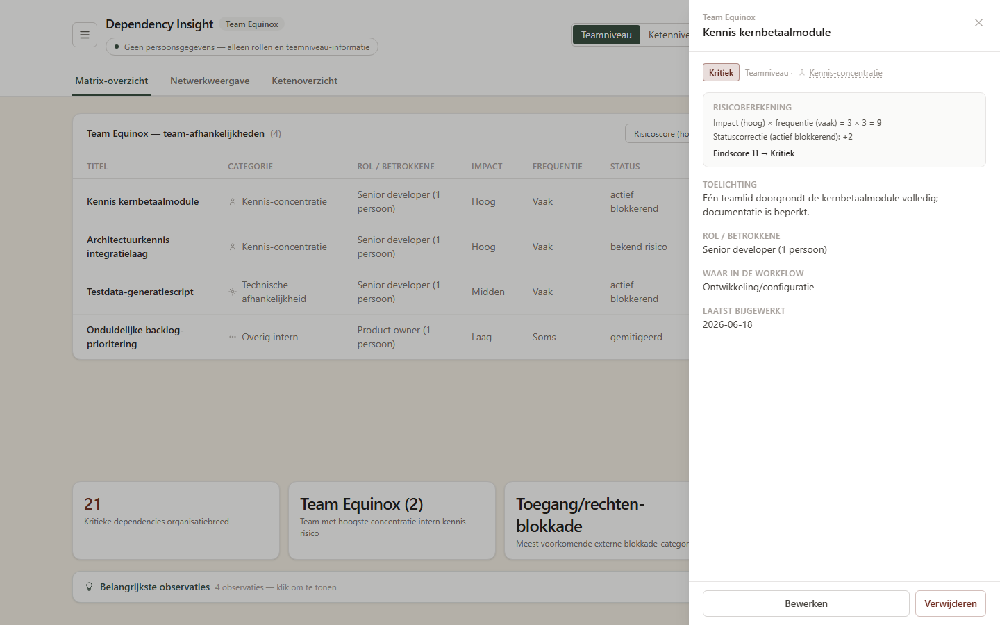
6Team-navigatie
Via het hamburgermenu (☰) bereik je de teampagina van elk team.
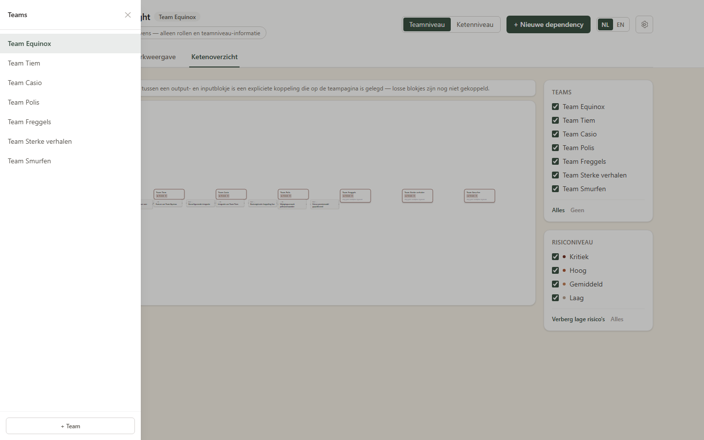
- Klik een teamnaam om naar de bijbehorende teampagina te gaan.
- + Team onderaan voegt een nieuw, leeg team toe.
- Wisselen tussen teams ververst de teampagina volledig — geen restjes van het vorige team.
7Teampagina — workflow
Een vaste, kleurgecodeerde fasereeks (analyse/refinement t/m beheer/nazorg) met een sleepbaar Miro-achtig canvas.
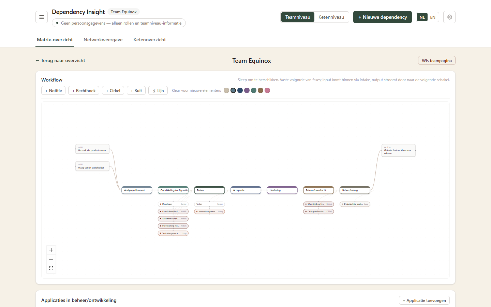
- Input komt binnen links, stroomt door de fases, en verlaat het team rechts als output.
- Capaciteit (hoofdstuk 9) en dependencies met een ingevulde workflow-fase verschijnen automatisch als badges onder de betreffende fase.
- Bovenaan: de aantekeningen-toolbar (hoofdstuk 10).
- Wis teampagina (rechtsboven) reset de hele workflow van dit team — dependencies blijven bestaan.
8Teampagina — applicaties en input/output
Drie lijsten die precies vastleggen wat het team beheert en hoe werk in- en uitstroomt.
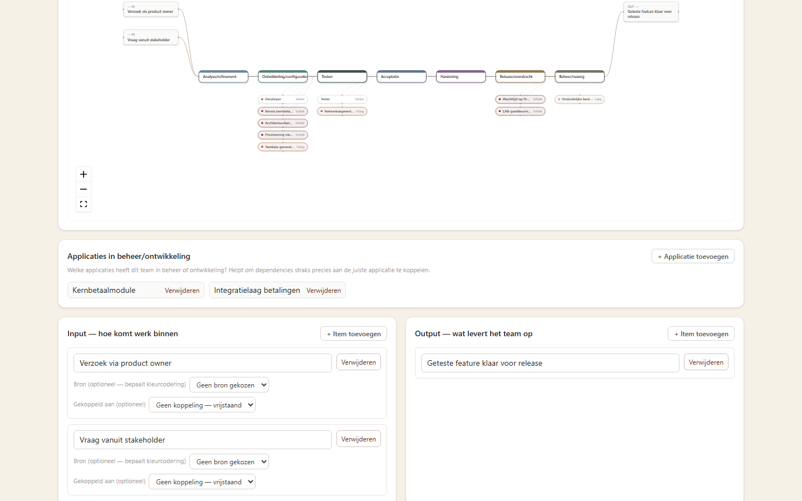
- Applicaties in beheer/ontwikkeling — welke systemen dit team draaiende houdt.
- Input — hoe werk binnenkomt; optioneel een bron (team/rol/persoon/systeem/omgeving/stakeholder), die het blokje op het canvas kleurt.
- Output — wat het team oplevert.
- Een input kan expliciet gekoppeld worden aan de output van een ander team — dit vult automatisch het ketenoverzicht (hoofdstuk 4).
9Teampagina — capaciteit
Wie zit er in het team, en wat gebeurt er als deze persoon wegvalt?
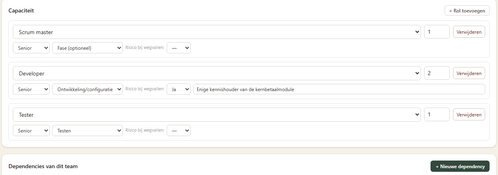
- Rol — kies uit gebruikelijke agile-rollen, of voeg een eigen rol toe (blijft daarna overal beschikbaar).
- Senioriteit — junior / medior / senior.
- Fase (optioneel) — koppelt de rol aan een workflow-fase, zichtbaar als badge op het canvas.
- Risico bij wegvallen — ja/nee, met een toelichtingsveld voor de reden (bijv. enige kennishouder van een systeem).
- Onderaan dezelfde pagina: de dependencies van dit team, met risicoscore — klik voor het detailpaneel.
10Teampagina — aantekeningen (Miro-achtig)
Vrije aantekeningen bovenop de vaste workflow, voor context die niet in een veld past.
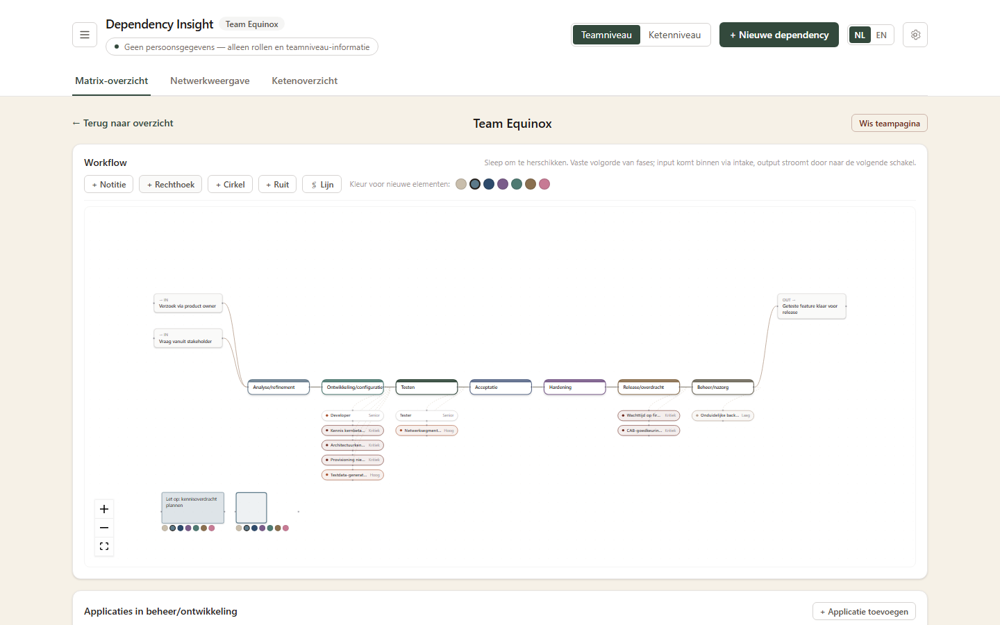
- + Notitie — een gekleurd tekstvak, direct te bewerken.
- + Rechthoek / + Cirkel / + Ruit — vormen met korte labeltekst.
- 🖇 Lijn — activeer, klik daarna twee elementen om ze te verbinden.
- Kleurkeuze per element — dezelfde kleuren als de "bron"-codering bij input-items (hoofdstuk 8), zodat aantekeningen en input dezelfde beeldtaal spreken.
- Verwijderen via het ✕-knopje dat verschijnt bij het aanwijzen van een element.
11Instellingen & privacy
Bereikbaar via het tandwiel-icoon rechtsboven.
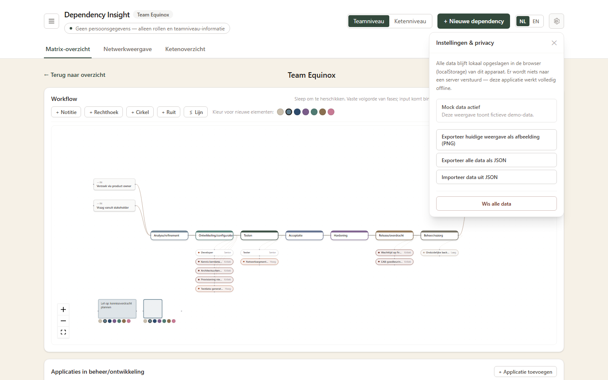
- Alle data blijft lokaal in de browser — er wordt niets naar een server verstuurd.
- Exporteer als PNG — slaat de huidige weergave op als afbeelding, handig voor presentaties.
- Exporteer/importeer als JSON — volledige back-up of overdracht naar een collega.
- Terug naar mockdata — herstelt de fictieve demo-data (alleen zichtbaar bij eigen data).
- Wis alle data — verwijdert alles definitief, met bevestigingsstap.